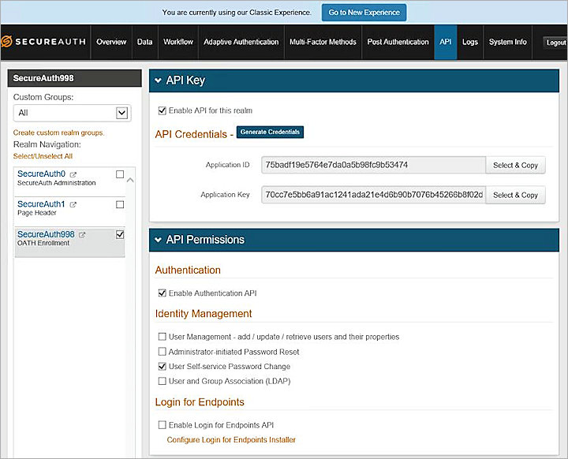

This document describes the steps to integrate SecureAuth with client authentication and software downloads for the WatchGuard Mobile VPN with SSL client.
SecureAuth offers a variety of two-factor authentication methods:
- Time-based passcodes
- Push-to-accept
- Email one-time passcodes (OTP)
- SMS OTP
- Knowledge-based authentication (KBA/KBQ)
This document explains how to use the email OTP authentication method only. For information about other two-factor authentication methods, see the SecureAuth documentation.
Test Topology and Workflow
This diagram outlines the topology used in the integration. In this diagram, the SecureAuth Identity Provider (IdP) server and SecureAuth IdP RADIUS server are located on the same computer.
This diagram shows the workflow for two-factor authentication through integration with SecureAuth:
- The SSL VPN client initiates primary authentication to the WatchGuard Firebox.
- The Firebox sends an authentication request to the SecureAuth Identity Provider (IdP) RADIUS server.
- The SecureAuth IdP RADIUS server connects to the SecureAuth IdP server.
- The SecureAuth IdP server forwards the authentication request to the Active Directory (AD) server where the user information is stored.
- The SecureAuth IdP RADIUS server completes primary authentication.
- The SecureAuth IdP RADIUS server requests secondary authentication from the SecureAuth IdP server.
- The SecureAuth IdP server requests secondary authentication information (mail address) from the AD server. The AD server sends a response.
- SecureAuth Cloud Services are conducted through the SecureAuth IdP server. (SecureAuth IdP server calls the SMTP server to send OTP mail.)
- The SecureAuth IdP server receives the secondary authentication result.
- The SecureAuth IdP server sends the secondary authentication result to the SecureAuth IdP RADIUS server.
- The SecureAuth IdP RADIUS server returns the secondary authentication result to the WatchGuard Firebox.
- The Firebox grants the user access.
Platform and Software
The hardware and software used to complete the integration outlined in this document include:
- WatchGuard Firebox with Fireware v12.4.1
- SecureAuth IdP v9.3
- SecureAuth RADIUS Server v2.5.1
- Active Directory (AD) server with Windows Server 2016
Configure SecureAuth IdP Server
The high-level steps to configure the Secure IdP server include:
- Configure email settings
- Configure the LDAP connection
- Configure the default workflow
- Enable API authentication
To configure email settings:
- Log in to the SecureAuth admin console.
- In the upper-right corner, click Go to Classic Experience.
- Select Admin Realm.
- From the Realm Navigation section, select the SecureAuth998 check box.
- Select the Overview tab.
- In the Advanced Settings section, click Email Settings.
- In the SMTP section, in the Server Address text box, type the SMTP server address.
- In the Port text box, type 25.
- In the Username and Password text boxes, type the user name (email) and password.
The system sends a one-time passcode to the email address specified here. - In the Email section, in the Sender Address text box, type the email address that is used to send the one-time passcode.
- Click Save.


To configure the LDAP connection:
- Select the Data tab.
The Membership Connection Settings page appears. - In the Datastore Type section, from the Type drop-down list, select Active Directory (sAMAccountName).
- In the Datastore Connection section, in the Domain text box, type the domain name.
For example, type ecotest.com. - In the Connection String text box, type the LDAP IP address, followed by the domain name.
For example, type LDAP://10.0.1.173/DC=ecotest,DC=com for the ecotest.com domain. - In the Datastore Credentials section, in the Service Account text box, type a name for the account.
For example, type test. - In the adjacent @ text box, type the domain name.
For example, type ecotest.com. - In the Password text box, type a password for the service account.
To configure the AD server information that you specified in steps 1–6, see Configure the AD Server. - To confirm the connection to the AD server, click Test Connection.
If the test is successful, a Connection Successful message appears. - In the Profile Fields section, in the Email 1 text box, make sure the value entered is mail.
- Select the Writable check box.
- Click Save.


To configure the default workflow and multi-factor authentication:
- Select the Workflow tab.
- In the Workflow section, from the Default Workflow drop-down list, select Username & Password | Second Factor.
- Click Save.
- Select the Multi-Factor Methods tab.
- In the Email Settings section, from the Email Field 1 drop-down list, select One-Time Passcode via HTML Email.
- Select Disabled for all other email settings.

- Click Save.
To enable API authentication:
- Select the API tab.
- In the API Key section, select the Enable API for this realm check box.
- To create the Application ID and Application Key, click Generate Credentials.
- Copy or note these values for reference.
The keys are used to configure the SecureAuth RADIUS server. - In the API Permissions section, select the Enable Authentication API and User Self-service Password Change check boxes.

- Click Save.
Configure SecureAuth RADIUS Server
To download and configure the SecureAuth RADIUS server:
- Download the SecureAuth RADIUS server from https://www.secureauth.com/Support/Downloads/Support-Tools.aspx.
- Log in to the SecureAuth RADIUS server Web UI at http://localhost:8088/configuration.
- Select the Settings tab.
- In the RADIUS Server Settings section, in the Shared Secret text box, type a password.
For example, type 11111111. - Click Save.

To configure the IdP Realm:
- Select the ldP Realms tab.
- Click .
- In the Primary ldP Host text box, type localhost.
If the two servers are not on the same computer, type the SecureAuth IdP server IP address. - In the ldP Realm text box, type SecureAuth998.
- In the API Application ID and API Application Key text boxes, type the application ID and key generated in the previous procedure.
- Click Save Changes.
The IdP Realm shows as enabled.


To configure the RADIUS client and authentication workflow:
- Select the RADIUS Clients tab.
- Click Add Client or edit the existing client details.
- In the Client Name text box, type a name.
In this example, the Client Name is client. - In the IP Address text box, type the IP address of the WatchGuard Firebox connected to the RADIUS server.
- From the IdP Realm drop-down list, select https://localhost/SecureAuth998.
- From the Authentication Workflow drop-down list, select Username | Second Factor.
- Click Save Changes.
The RADIUS client shows as enabled.


Configure the AD Server
- Create an AD server.
In this example, the domain name is ecotest.com. - Add a new user.
- Click Next.
- Double-click the new user.
The Properties dialog box appears. - Select the General tab.
- In the E-mail text box, type the email address where the one-time passcode is received.
- Click OK.


Configure RADIUS Authentication Server on the Firebox
- Log in to Fireware Web UI.
- Select Authentication > Servers.
- In the Authentication Servers list, select RADIUS.
- Select the Enable RADIUS Server check box.
- In the IP Address text box, type the IP address of the SecureAuth RADIUS server.
- In the Port text box, type 1812.
- In the Shared Secret and Confirm Secret text boxes, type the passcode.
For example, type 11111111. - In the Timeout text box, type 60 or higher.
- Click Save.

Configure a User Group on the Firebox
You can use the default SSLVPN-Users group for authentication, or you can add the names of users and groups to match those defined on your RADIUS server.
- Log in to Fireware Web UI.
- Select Authentication > Users and Groups.
- Click Add.
- In the Add User or Group dialog box, select the User option.
- In the Name text box, type a user name.
- From the Authentication Server drop-down list, select RADIUS.

- Click OK.
- Click Save.

Configure Mobile VPN with SSL on the Firebox
- Log in to Fireware Web UI.
- Select VPN > Mobile VPN.
- In the SSL section, click Manually Configure.
- Select the Activate Mobile VPN with SSL check box.
- In the Firebox IP Addresses or Domain Names section, in the Primary text box, type the IP address or domain name to which mobile clients connect.
- Select the Authentication tab.
- In the Authentication Server section, from the drop-down list, select RADIUS.
- Click Add.
- Select the RADIUS server and click Move Up to set RADIUS as the default server.
- In the Users and Groups section, click Add.
The Add User or Group dialog box appears. - Select the User option.
- In the Name text box, type a name.
- From the Authentication Server drop-down list, select RADIUS.

WatchGuard recommends that you select the Auto reconnect after a connection is lost and Force users to authenticate after a connection is lost check boxes in the Settings section.


- Click Save.

When you activate Mobile VPN with SSL, an SSLVPN-Users user group and a WatchGuard SSL VPN policy are automatically created and added to your configuration to allow SSL VPN connections from the Internet to the external interface. You can use these groups or create new groups that match the user group names defined on your authentication server.
Mobile VPN with SSL Client Software Download
To download the Mobile VPN with SSL client:
- Log in to Fireware Web UI.
- Select VPN > Mobile VPN.
- In the SSL section, click Download Client.

Mobile VPN with SSL Client Authentication
After you install and configure the Mobile VPN with SSL client on your computer, you can use two-factor email authentication to connect to your Firebox.
To connect to the Firebox with the Mobile VPN with SSL client:
- Run the Mobile VPN with SSL client.
- In the Server text box, type the IP address of the Firebox.
- In the User name text box, type the user name.
- In the Password text box, type the password.
- Click Connect.
The one-time passcode (OTP) dialog box appears. You also receive an email message with the required OTP . - Type the OTP in the text box.
- Click OK.